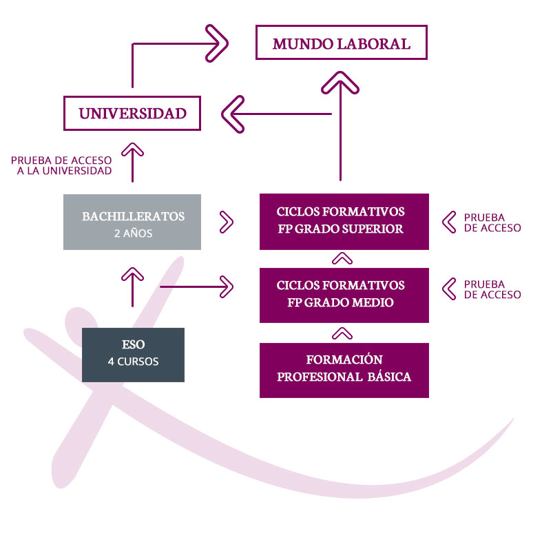

En mayo de 2012 nace EGIBIDE como resultado de la unión de Diocesanas y Jesús Obrero con el objetivo de mantener su tradición y vocación de proyecto socio-educativo de inspiración cristiana. 450 educadores forman a más de 7.000 alumnos y alumnas empezando desde los 12 años de edad en adelante (Secundaria), pasando por el Bachillerato hacia la Formación Profesional en 13 áreas distintas y terminando en la Formación Contínua a lo largo de la vida y la formación ocupacional.
La oferta educativa de egibide puede resumirse en la siguiente imagen
Para más información haga click aquí
Estos son los campus principales de Egibide
| Centro | Dirección | Teléfono | Arriaga | C/Pozoa s/n (01013) | 945 010 110 | arriaga@egibide.org |
|---|---|---|---|
| Jesús Obrero | C/Francia,32 (01002) | 945 000 333 | jesusobrero@egibide.org |
| Molinuevo | C/Pozoa s/n (01013) | 945 010 110 | molinuevo@egibide.org |
| Nieves Cano | C/Pozoa s/n (01013) | 945 010 110 | nievescano@egibide.org |
| Mendizorrotza | C/Pozoa s/n (01013) | 945 010 110 | mendizorrotza@egibide.org |